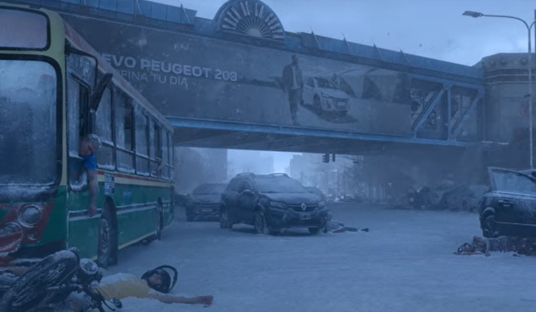
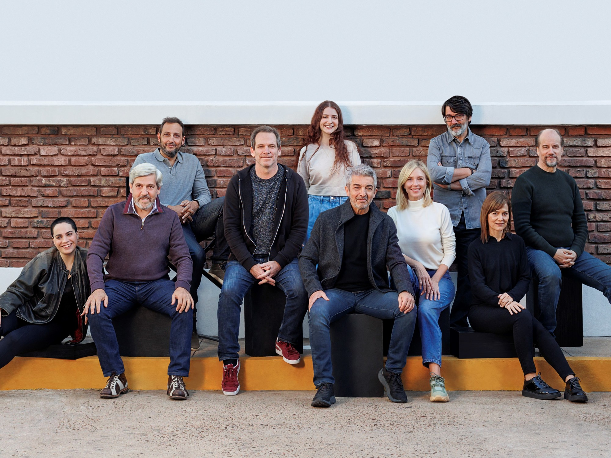

SINOPSIS
En un Buenos Aires sumido en el misterio y la desesperación, una nevada mortal cae repentinamente, transformando las calles en una trampa letal. Juan Salvo, un hombre común, se convierte en el inesperado protagonista de una lucha por la supervivencia cuando descubre que la nevada es parte de una invasión alienígena. Junto a su familia y un grupo de amigos, se enfrenta a horrores invisibles, criaturas controladas por fuerzas extraterrestres y una amenaza global que supera cualquier comprensión. El Eternauta es una épica de ciencia ficción, basada en la historieta icónica de Héctor Germán Oesterheld, que combina acción, drama humano y una poderosa reflexión sobre la resistencia colectiva frente a lo desconocido. Más información
REPARTO
Ricardo Darin
Carla Peterson
César Troncoso
Andrea Pietra
Ariel Staltari
Marcelo Subiotto
GALERIA
PRODUCCION
La adaptación cinematográfica de El Eternauta fue dirigida por el reconocido realizador argentino Andrés Muschietti, aclamado internacionalmente por su trabajo en películas como It y Mama. Con el objetivo de mantener la esencia original de la historieta de Oesterheld, la producción combinó efectos visuales de última generación con una puesta en escena cuidada y realista. El rodaje se llevó a cabo en múltiples locaciones de Buenos Aires, recreando con detalle los paisajes urbanos de la década del 60 en medio de un escenario apocalíptico. La producción estuvo a cargo de El Eternauta Films, en coproducción con estudios internacionales, aportando una mirada global a una obra profundamente argentina. Con un equipo técnico de primer nivel y un elenco comprometido con el espíritu del relato, El Eternauta promete ser una de las superproducciones más ambiciosas del cine nacional.